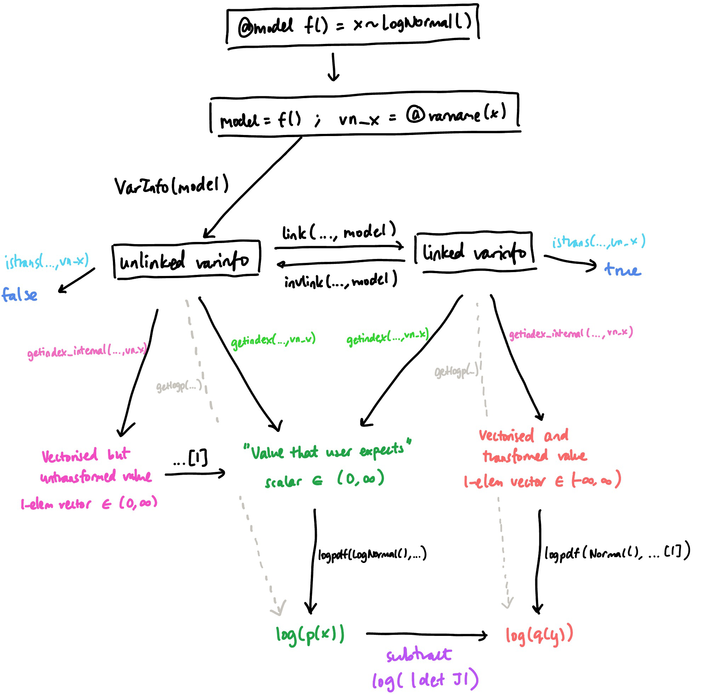
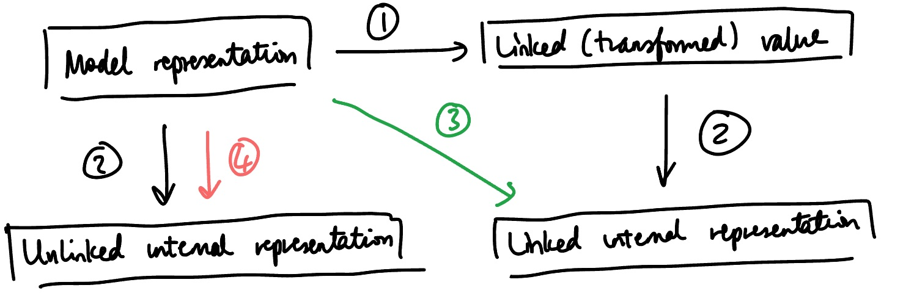

import Random
Random.seed!(468);
# Turing re-exports the entirety of Distributions
using TuringVariable transformations in DynamicPPL
In the final part of this chapter, we’ll discuss the higher-level implications of constrained distributions in the Turing.jl framework.
Linked and unlinked VarInfos in DynamicPPL
When we are performing Bayesian inference, we’re trying to sample from a joint probability distribution, which isn’t usually a single, well-defined distribution like in the rather simplified example above. However, each random variable in the model will have its own distribution, and often some of these will be constrained. For example, if b ~ LogNormal() is a random variable in a model, then \(p(b)\) will be zero for any \(b \leq 0\). Consequently, any joint probability \(p(b, c, \ldots)\) will also be zero for any combination of parameters where \(b \leq 0\), and so that joint distribution is itself constrained.
To get around this, DynamicPPL allows the variables to be transformed in exactly the same way as above. For simplicity, consider the following model:
using DynamicPPL
@model function demo()
x ~ LogNormal()
end
model = demo()
vi = VarInfo(model)
vn_x = @varname(x)
# Retrieve the 'internal' representation of x – we'll explain this later
DynamicPPL.getindex_internal(vi, vn_x)1-element Vector{Float64}:
1.0746648736094493The call to VarInfo executes the model once and stores the sampled value inside vi. By default, VarInfo itself stores un-transformed values. We can see this by comparing the value of the logpdf stored inside the VarInfo:
DynamicPPL.getlogp(vi)(logprior = -0.9935400392011169, logjac = 0.0, loglikelihood = 0.0)with a manual calculation:
logpdf(LogNormal(), DynamicPPL.getindex_internal(vi, vn_x))1-element Vector{Float64}:
-0.9935400392011169In DynamicPPL, the link function can be used to transform the variables. This function does three things: firstly, it transforms the variables; secondly, it updates the value of logp (by adding the Jacobian term); and thirdly, it sets a flag on the variables to indicate that it has been transformed. Note that this acts on all variables in the model, including unconstrained ones. (Unconstrained variables just have an identity transformation.)
vi_linked = DynamicPPL.link(vi, model)
println("Transformed value: $(DynamicPPL.getindex_internal(vi_linked, vn_x))")
println("Transformed logp: $(DynamicPPL.getlogp(vi_linked))")
println("Transformed flag: $(DynamicPPL.istrans(vi_linked, vn_x))")Transformed value: [0.07200886749732066]
Transformed logp: (logprior = -0.9935400392011169, logjac = -0.07200886749732066, loglikelihood = 0.0)
Transformed flag: trueIndeed, we can see that the new logp value matches with
logpdf(Normal(), DynamicPPL.getindex_internal(vi_linked, vn_x))1-element Vector{Float64}:
-0.9215311717037962The reverse transformation, invlink, reverts all of the above steps:
vi = DynamicPPL.invlink(vi_linked, model) # Same as the previous vi
println("Un-transformed value: $(DynamicPPL.getindex_internal(vi, vn_x))")
println("Un-transformed logp: $(DynamicPPL.getlogp(vi))")
println("Un-transformed flag: $(DynamicPPL.istrans(vi, vn_x))")Un-transformed value: [1.0746648736094493]
Un-transformed logp: (logprior = -0.9935400392011169, logjac = 0.0, loglikelihood = 0.0)
Un-transformed flag: falseModel and internal representations
In DynamicPPL, there is a difference between the value of a random variable and its ‘internal’ value. This is most easily seen by first transforming, and then comparing the output of getindex and getindex_internal. The former extracts the regular value, which we call the model representation (because it is consistent with the distribution specified in the model). The latter, as the name suggests, gets the internal representation of the variable, which is how it is actually stored in the VarInfo object.
println(" Model representation: $(getindex(vi_linked, vn_x))")
println("Internal representation: $(DynamicPPL.getindex_internal(vi_linked, vn_x))") Model representation: 1.0746648736094493
Internal representation: [0.07200886749732066]
Note
Note that vi_linked[vn_x] can also be used as shorthand for getindex(vi_linked, vn_x); this usage is common in the DynamicPPL/Turing codebase.
We can see (for this linked varinfo) that there are two differences between these outputs:
The internal representation has been transformed using the bijector (in this case, the log function). This means that the
istrans()flag which we used above doesn’t modify the model representation: it only tells us whether the internal representation has been transformed or not.The internal representation is a vector, whereas the model representation is a scalar. This is because in DynamicPPL, all internal values are vectorised (i.e. converted into some vector), regardless of distribution. On the other hand, since the model specifies a univariate distribution, the model representation is a scalar.
One might also ask, what is the internal representation for an unlinked varinfo?
println(" Model representation: $(getindex(vi, vn_x))")
println("Internal representation: $(DynamicPPL.getindex_internal(vi, vn_x))") Model representation: 1.0746648736094493
Internal representation: [1.0746648736094493]For an unlinked VarInfo, the internal representation is vectorised, but not transformed. We call this an unlinked internal representation; conversely, when the VarInfo has been linked, each variable will have a corresponding linked internal representation.
This sequence of events is summed up in the following diagram, where f(..., args) indicates that the ... is to be replaced with the object at the beginning of the arrow:

In the final part of this article, we’ll take a more in-depth look at the internal DynamicPPL machinery that allows us to convert between representations and obtain the correct probability densities. Before that, though, we’ll take a quick high-level look at how the HMC sampler in Turing.jl uses the functions introduced so far.
Case study: HMC in Turing.jl
While DynamicPPL provides the functionality for transforming variables, the transformation itself happens at an even higher level, i.e. in the sampler itself. The HMC sampler in Turing.jl is in this file. In the first step of sampling, it calls link on the sampler. This transformation is preserved throughout the sampling process, meaning that istrans() always returns true.
We can observe this by inserting print statements into the model. Here, __varinfo__ is the internal symbol for the VarInfo object used in model evaluation:
setprogress!(false)
@model function demo2()
x ~ LogNormal()
if x isa AbstractFloat
println("-----------")
println("model repn: $(DynamicPPL.getindex(__varinfo__, @varname(x)))")
println("internal repn: $(DynamicPPL.getindex_internal(__varinfo__, @varname(x)))")
println("istrans: $(istrans(__varinfo__, @varname(x)))")
end
end
sample(demo2(), HMC(0.1, 3), 3);[ Info: [Turing]: progress logging is disabled globally ----------- model repn: 0.9286310592520649 internal repn: Real[0.9286310592520649] istrans: false ----------- model repn: 1.0439687015916723 internal repn: Real[1.0439687015916723] istrans: false ----------- model repn: 1.6788901959902727 internal repn: [0.5181329774995787] istrans: true ----------- model repn: 1.6993713154851589 internal repn: [0.5302583682434592] istrans: true ----------- model repn: 2.5879692292256236 internal repn: [0.9508734867787983] istrans: true
(Here, the check on if x isa AbstractFloat prevents the printing from occurring during computation of the derivative.) You can see that during the three sampling steps, istrans is always kept as true.
Note
The first two model evaluations where istrans is false occur prior to the actual sampling. One occurs when the model is checked for correctness (using DynamicPPL.check_model_and_trace). The second occurs because the model is evaluated once to generate a set of initial parameters inside DynamicPPL’s implementation of AbstractMCMC.step. Both of these steps occur with all samplers in Turing.jl, so are not specific to the HMC example shown here.
What this means is that from the perspective of the HMC sampler, it never sees the constrained variable: it always thinks that it is sampling from an unconstrained distribution.
The biggest prerequisite for this to work correctly is that the potential energy term in the Hamiltonian—or in other words, the model log density—must be programmed correctly to include the Jacobian term. This is exactly the same as how we had to make sure to define logq(y) correctly in the toy HMC example above.
Within Turing.jl, this is correctly handled because a statement like x ~ LogNormal() in the model definition above is translated into assume(LogNormal(), @varname(x), __varinfo__), defined here. If you follow the trail of function calls, you can verify that the assume function does indeed check for the presence of the istrans flag and adds the Jacobian term accordingly.
A deeper dive into DynamicPPL’s internal machinery
As described above, DynamicPPL stores a (possibly linked) internal representation which is accessible via getindex_internal, but can also provide users with the original, untransformed, model representation via getindex. This abstraction allows the user to obtain samples from constrained distributions without having to perform the transformation themselves.

The conversion between these representations is done using several internal functions in DynamicPPL, as depicted in the above diagram. The following operations are labelled:
This is linking, i.e. transforming a constrained variable to an unconstrained one.
This is vectorisation: for example, converting a scalar value to a 1-element vector.
This arrow brings us from the model representation to the linked internal representation. This is the composition of (1) and (2): linking and then vectorising.
This arrow brings us from the model representation to the unlinked internal representation. This only requires a single step, vectorisation.
Each of these steps can be accomplished using the following functions.
| To get the function | To get the inverse function | |
|---|---|---|
| (1) | link_transform(dist) |
invlink_transform(dist) |
| (2) | to_vec_transform(dist) |
from_vec_transform(dist) |
| (3) | to_linked_internal_transform(vi, vn[, dist]) |
from_linked_internal_transform(vi, vn[, dist]) |
| (4) | to_internal_transform(vi, vn[, dist]) |
from_internal_transform(vi, vn[, dist]) |
Note that these functions do not perform the actual transformation; rather, they return the transformation function itself. For example, let’s take a look at the VarInfo from the previous section, which contains a single variable x ~ LogNormal().
model_repn = vi[vn_x]1.0746648736094493# (1) Get the link function
f_link = DynamicPPL.link_transform(LogNormal())
# (2) Get the vectorise function
f_vec = DynamicPPL.to_vec_transform(LogNormal())
# Apply it to the model representation
linked_internal_repn = f_vec(f_link(model_repn))1-element Vector{Float64}:
0.07200886749732066Equivalently, we could have done:
# (3) Get the linked internal transform function
f_linked_internal = DynamicPPL.to_linked_internal_transform(vi, vn_x, LogNormal())
# Apply it to the model representation
linked_internal_repn = f_linked_internal(model_repn)1-element Vector{Float64}:
0.07200886749732066And let’s confirm that this is the same as the linked internal representation, using the VarInfo that we linked earlier:
DynamicPPL.getindex_internal(vi_linked, vn_x)1-element Vector{Float64}:
0.07200886749732066The purpose of having all of these machinery is to allow other parts of DynamicPPL, such as the tilde pipeline, to handle transformed variables correctly. The following diagram shows how assume first checks whether the variable is transformed (using istrans), and then applies the appropriate transformation function.
%%{ init: { 'themeVariables': { 'lineColor': '#000000' } } }%%
%%{ init: { 'flowchart': { 'curve': 'linear', 'wrappingWidth': -1 } } }%%
graph TD
A["x ~ LogNormal()"]:::boxStyle
B["vn = <span style='color:#3B6EA8 !important;'>@varname</span>(x)<br>dist = LogNormal()<br>x, vi = ..."]:::boxStyle
C["assume(vn, dist, vi)"]:::boxStyle
D(["<span style='color:#3B6EA8 !important;'>if</span> istrans(vi, vn)"]):::boxStyle
E["f = from_internal_transform(vi, vn, dist)"]:::boxStyle
F["f = from_linked_internal_transform(vi, vn, dist)"]:::boxStyle
G["x, logjac = with_logabsdet_jacobian(f, getindex_internal(vi, vn, dist))"]:::boxStyle
H["<span style='color:#3B6EA8 !important;'>return</span> x, logpdf(dist, x) - logjac, vi"]:::boxStyle
A -.->|<span style='color:#3B6EA8 ; background-color:#ffffff;'>@model</span>| B
B -.->|<span style='color:#000000 ; background-color:#ffffff;'>tilde-pipeline</span>| C
C --> D
D -->|<span style='color:#97365B ; background-color:#ffffff;'>false</span>| E
D -->|<span style='color:#97365B ; background-color:#ffffff;'>true</span>| F
E --> G
F --> G
G --> H
classDef boxStyle fill:#ffffff,stroke:#000000,font-family:Courier,color:#000000
linkStyle default stroke:#000000,stroke-width:1px,color:#000000
Here, with_logabsdet_jacobian is defined in the ChangesOfVariables.jl package, and returns both the effect of the transformation f as well as the log Jacobian term.
Because we chose f appropriately, we find here that x is always the model representation; furthermore, if the variable was not linked (i.e. istrans was false), the log Jacobian term will be zero. However, if it was linked, then the Jacobian term would be appropriately included, making sure that sampling proceeds correctly.
Why do we need to do this at runtime?
Given that we know whether a VarInfo is linked or not, one might wonder why we need both from_internal_transform and from_linked_internal_transform at the point where the model is evaluated. Could we not, for example, store the required transformation inside the VarInfo when we link it, and simply reuse that each time?
That is, why can’t we just do
%%{ init: { 'flowchart': { 'curve': 'linear', 'wrappingWidth': -1 } } }%%
%%{ init: { 'themeVariables': { 'lineColor': '#000000' } } }%%
graph TD
A["assume(varinfo, <span style='color:#3B6EA8 !important;'>@varname</span>(x), Normal())"]:::boxStyle
B["f = from_internal_transform(varinfo, varname, dist)"]:::boxStyle
C["x, logjac = with_logabsdet_jacobian(f, getindex_internal(varinfo, varname))"]:::boxStyle
D["<span style='color:#3B6EA8 !important;'>return</span> x, logpdf(dist, x) - logjac, varinfo"]:::dashedBox
A --> B
B --> C
C --> D
classDef dashedBox fill:#ffffff,stroke:#000000,stroke-dasharray: 5 5,font-family:Courier,color:#000000
classDef boxStyle fill:#ffffff,stroke:#000000,font-family:Courier,color:#000000
linkStyle default stroke:#000000,stroke-width:1px,color:#000000
where from_internal_transform here only looks up a stored transformation function?
Unfortunately, this is not possible in general, because the transformation function might not be a constant between different model evaluations. Consider, for example, the following model:
@model function demo_dynamic_constraint()
m ~ Normal()
x ~ truncated(Normal(); lower=m)
return (m=m, x=x)
enddemo_dynamic_constraint (generic function with 2 methods)Here, m is distributed according to a plain Normal(), whereas the variable x is constrained to be in the domain (m, Inf). Because of this, we expect that any time we sample from the model, we should have that m < x (in terms of their model representations):
model = demo_dynamic_constraint()
vi = VarInfo(model)
vn_m, vn_x = @varname(m), @varname(x)
vi[vn_m], vi[vn_x](-0.20318141265857553, 0.07028870940645648)(Note that vi[vn] is a shorthand for getindex(vi, vn), so this retrieves the model representations of m and x.) So far, so good. Let’s now link this VarInfo so that we end up working in an ‘unconstrained’ space, where both m and x can take on any values in (-Inf, Inf). First, we should check that the model representations are unchanged when linking:
vi_linked = link(vi, model)
vi_linked[vn_m], vi_linked[vn_x](-0.20318141265857553, 0.07028870940645648)But if we change the value of m, to, say, a bit larger than x:
# Update the model representation for `m` in `vi_linked`.
vi_linked[vn_m] = vi_linked[vn_x] + 1
vi_linked[vn_m], vi_linked[vn_x](1.0702887094064564, 0.07028870940645648)
Warning
This is just for demonstration purposes! You shouldn’t be directly setting variables in a linked varinfo like this unless you know for a fact that the value will be compatible with the constraints of the model.
Now, we see that the constraint m < x is no longer satisfied. Hence, one might expect that if we try to evaluate the model using this VarInfo, we should obtain an error. Here, evaluate!! returns two things: the model’s return value itself (which we defined above to be a NamedTuple), and the resulting VarInfo post-evaluation.
retval, ret_varinfo = DynamicPPL.evaluate!!(model, vi_linked)
getlogp(ret_varinfo)(logprior = -1.3632733726367063, logjac = 1.2965629059941892, loglikelihood = 0.0)But we don’t get any errors! Indeed, we could even calculate the ‘log probability density’ for this evaluation.
To understand this, we need to look at the actual value which was used during the model evaluation. We can glean this from the return value (or from the returned VarInfo, but the former is easier):
retval(m = 1.0702887094064564, x = 1.3437588314714883)We can see here that the model evaluation used the value of m that we provided, but the value of x was ‘updated’.
The reason for this is that internally in a model evaluation, we construct the transformation function from the internal to the model representation based on the current realizations in the model! That is, we take the dist in a x ~ dist expression at model evaluation time and use that to construct the transformation, thus allowing it to change between model evaluations without invalidating the transformation.
Knowing that the distribution of x depends on the value of m, we can now understand how the model representation of x got updated. The linked VarInfo does not store the model representation of x, but only its linked internal representation. So, what happened during the model evaluation above was that the linked internal representation of x – which was constructed using the original value of m – was transformed back into a new model representation using a different value of m.
We can reproduce the ‘new’ value of x by performing these transformations manually:
# Generate a fresh linked VarInfo (without the new / 'corrupted' values)
vi_linked = link(vi, model)
# See the linked internal representations
DynamicPPL.getindex_internal(vi_linked, vn_m), DynamicPPL.getindex_internal(vi_linked, vn_x)([-0.20318141265857553], [-1.2965629059941892])Now we update the value of m like we did before:
vi_linked[vn_m] = vi_linked[vn_x] + 1
vi_linked[vn_m]1.0702887094064564When evaluating the model, the distribution of x is now changed, and so is the corresponding inverse bijector:
new_dist_x = truncated(Normal(); lower=vi_linked[vn_m])
new_f_inv = DynamicPPL.invlink_transform(new_dist_x)Bijectors.Inverse{Bijectors.TruncatedBijector{Float64, Float64}}(Bijectors.TruncatedBijector{Float64, Float64}(1.0702887094064564, Inf))and if we apply this to the internal representation of x:
new_f_inv(DynamicPPL.getindex_internal(vi_linked, vn_x))1-element Vector{Float64}:
1.3437588314714883which is the same value as we got above in retval.
Conclusion
In this chapter of the Turing docs, we’ve looked at:
- why variables might need to be transformed;
- how this is accounted for mathematically with the Jacobian term;
- the basic API and functionality of Bijectors.jl; and
- the higher-level usage of transforms in DynamicPPL and Turing.
This will hopefully have equipped you with a better understanding of how constrained variables are handled in the Turing framework. With this knowledge, you should especially find it easier to navigate DynamicPPL’s VarInfo type, which forms the backbone of model evaluation.